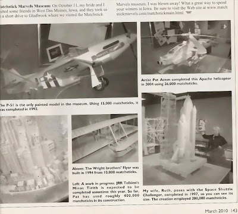

Matchstick Marvels
4/28/2010
Comment: Hi, Clinton. I know you used to build with toothpicks. Well, here are a couple of pictures of things made from matchsticks. I thought you might get a kick out of them! Enjoy! Mike Palma

Reply: Absolutely amazing! Thanks for remembering and sending the pictures. I use matchsticks (and toothpicks) frequently in the shop to fill minor gaps, act as shims, etc. But never tried any model making with matchsticks. After seeing the pictures you sent, I'm not even tempted! Now, if I was 50 years younger, I might look at them as a challenge. The airplane is my favorite. I built one of similar style with about 6 foot wingspan (not nearly as sleek) when I was in high school. But of wood lath strips, not matchsticks! Clinton (Mr. D)